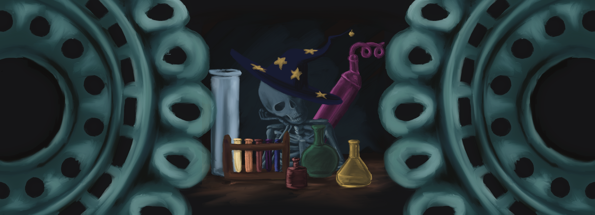
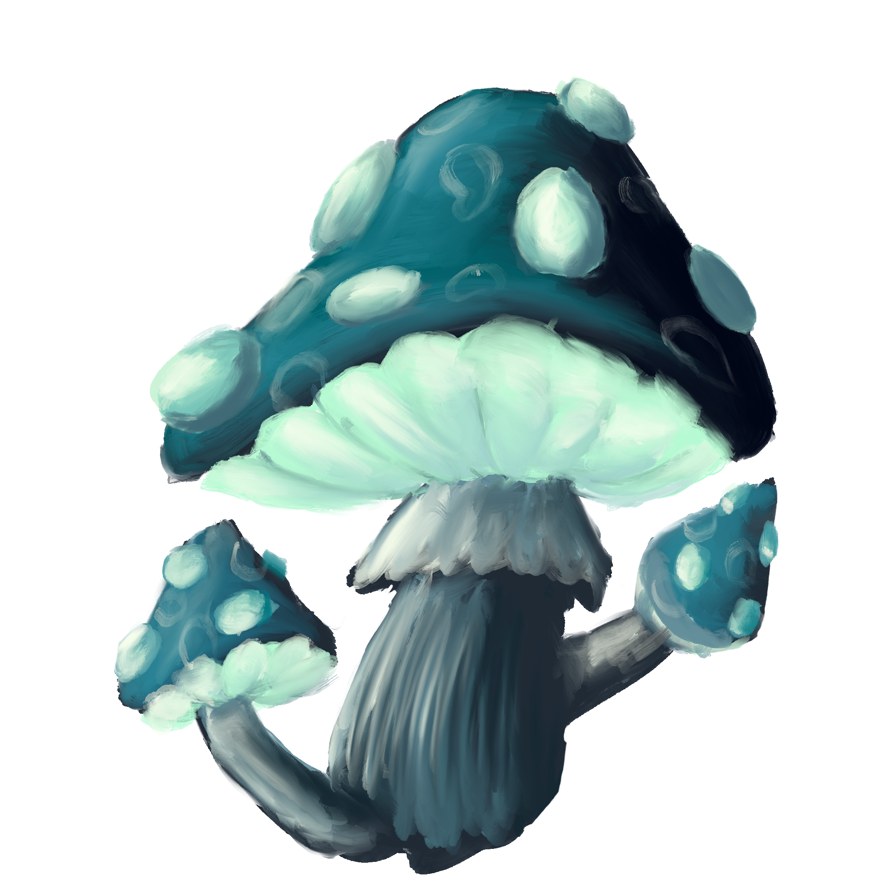
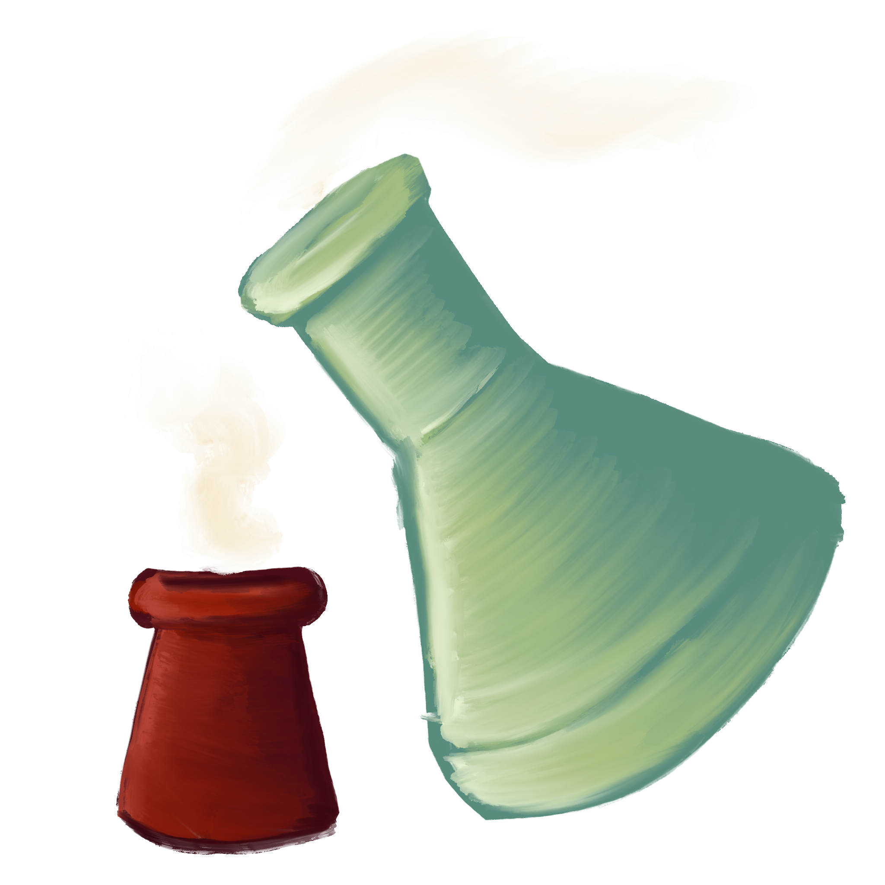
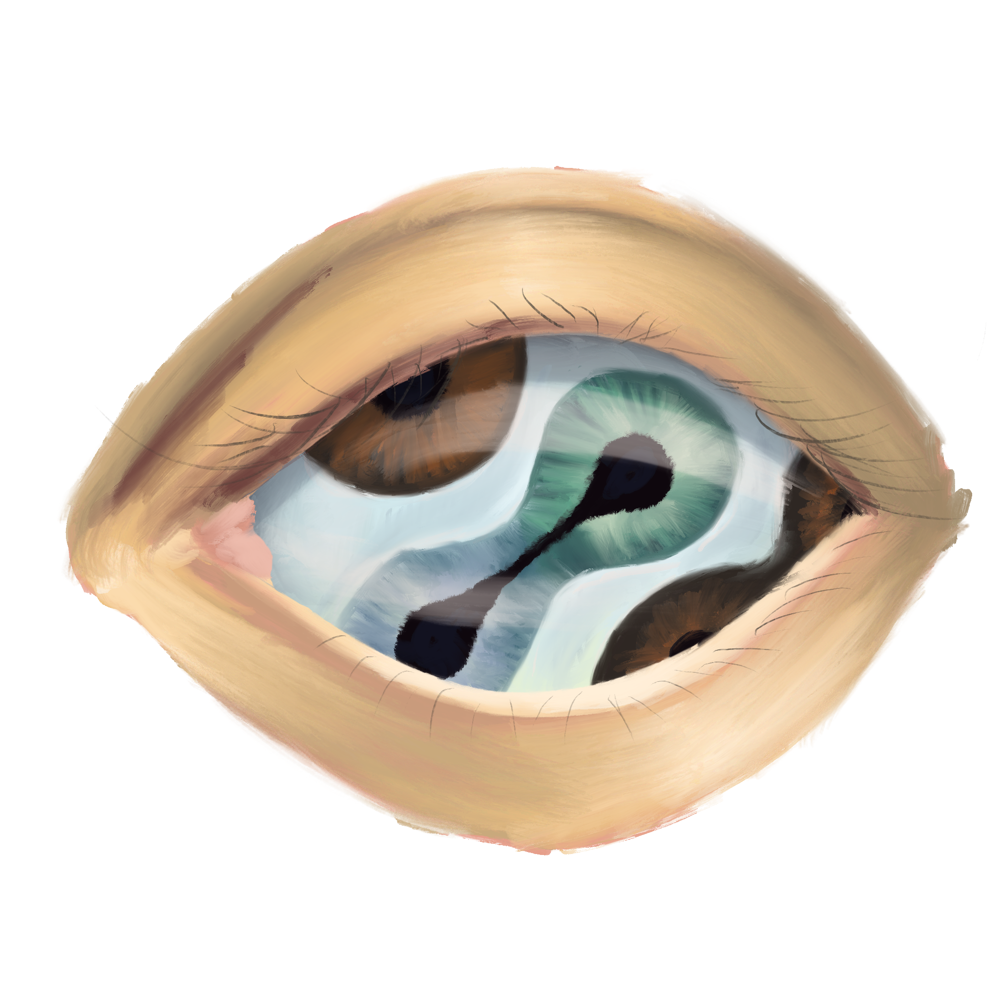
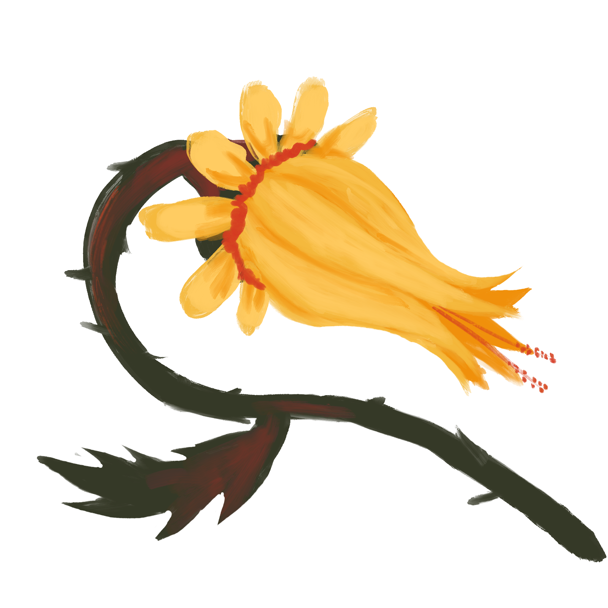
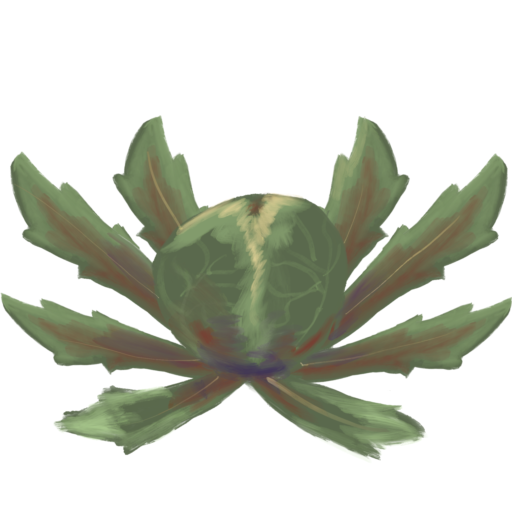
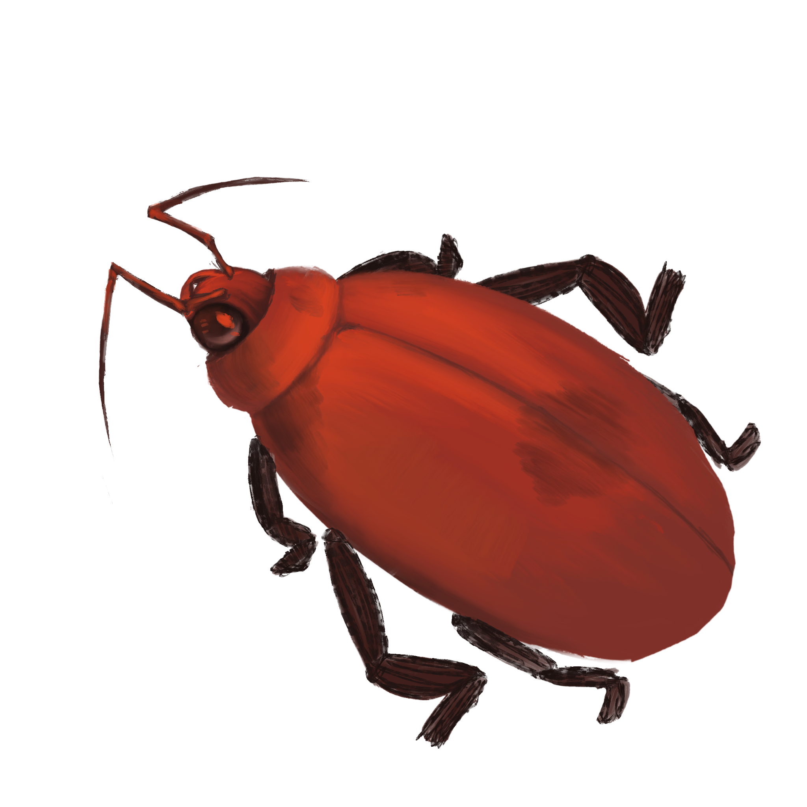

 |
|||||
|---|---|---|---|---|---|
Welcome to Deadly Diseases with your host Wallace Wellence. Today we have a wide variety of illnesses and decay from a fantasy world. With this neat chart you too can track your symptoms and feel at ease. |
|||||
warning |
|||||
| this contains horror fantasy elements relating to illnesses | |||||
| Images | Sientific Name | Simple Name | symptoms | description | cure |
 |
Asureosis | The Blues |
|
This illness tends to lean on the fatal side due to the spreading habits of a blue fungus. Commonly found to affect those who work in graveyards, this plant realises spores that blossom on the skin of the subject. In the first week the subject is commonly showing signs of fatigue and disorientation. The second week is when they appear to have blue spots spreading along their skin. By the third week they are stuck in bed and actively growing the fungus under their skin. The cycle repeats as the subject is buried and the fungus grows up from their grave | washing the spores off before they can settle is the only cure |
 |
Deliriumitus | Delulu Hulu |
|
Every great magic user is used to the occasional mishap with spells and potions but not every one has developed what is commonly known as Delulu hulu from those mishaps. Delulu hulu is an illness that only occurs when a subject inhales spoke from two vastly different potions or spells. The illness only lasts a matter of days and if untreated can result in death. During the first couple hours it is unnoticed by the subject. The next day however the subject cant even hold a cup or stand. The subject's mental state deteriorates till they start to scream at nonexistent shadows or people who do not exist. The subject becomes scared of water and can become hostile during delirium. The third day the subject has been awake for the whole night and starts to forget how to breathe. They may start to ramble about how the universe spins in the eye of a beast. Do not listen, clearly they're insane. That is the last day and they tend to not make it hours after they lose the ability to breathe. | use of cleansing spells can manage symptoms. |
 |
Opticpseudochromiaosis | Double Sight |
|
At first this infliction was documented under curses gone wrong but after further look it was found that the sickness was actually just an incredibly rare illness. Double sight tends to only affect a small number of people but when afflicted with the illness none have been known to survive. The sickness starts commonly from those who work around dead spellcasters. The subject can last up to a year but will not live past the year. In our case let's say our subject prepares dead spellcasters for burial. For the first week the subject would have no differences at all and will live naturally. The next week however the subject begins to complain of migraines and of extra sensitivity to light. The habit will not lessen even when given pain medication. As the first stage starts the subject will begin to start forming spots within the whites of their eyes. This phase can last from a month to three. Once developed the subject then becomes less social and tends to display introverted type ideals even if they were extroverted prior to the sickness. During the second stage the subject then begins to form multiple irises and pupils within their eyes. These are not based on prior eye color or have proper shape. We have yet to understand why this happens but we can assume this means the sickness does not interact with the RNA of the subject. During the final stage the subject will become overwhelmed by the multiple inputs and gain an extreme fever. Everything we've tried has failed to lower the fever. | N/A |
 |
florhaemapraeustusosis | Flower Burns |
|
During peak season of the plant commonly known as a scorching Sandy an odd affliction can develop. Many of the locals of the area know to watch out for the plant's bad habits. Yet that still doesn't stop the onslaught of tourists getting the infectious illness from the plants. The illness lasts for months and can sometimes become dormant till next season. The subject will first touch or interact with the flower during its peak time. The flower releases a pollen that sticks to the subject and burrows under the first layer of the skin. From a time ranging from a month to over a year the pollen will sit gaining the accumulating white blood cells to the area. Once enough has accumulated that's when the illness starts. The subject starts to get a warm itchy feeling on the spot that the pollen was released. Then the skin turns red before starting to look dry and almost like a bad sunburn. A couple days later and blisters begin to form along the subject's afflicted area. Many have described the feeling to be like a never ending fire just under their skin. Due to studies it was found that the sensation is actually a result of the pollen eating away at the second layer of skin and infecting the blood cells in the area. The wound gets larger as the days pass till the subject is either completely engulfed or succumbs to the pain and lack of sleep. It was also reported that if the wound was touched then the affliction would spread. | removal of the aflected area is only cure |
 |
Pruritustalocruralitous | Itchy Ankle |
|
A Plant ended up reaping havoc across many cities to the point of eradication. The plant formerly known as the ankle biter was killed off in many populated areas due to the awful sickness that is associated with it. The plant used to line walking paths for many popular trails and many city paths. Yet when they linked it to many cases of the "itchy ankle” disease they began eradicating the plant on sight until the plant was only witnessed in the wild. The plant strikes when the subject first steps on it. The plant gets crushed and releases a fluid that absorbs into the skin of the subject that stepped on it. Once the liquid is absorbed the subject has only a week left to live if not treated. The first day the subject will just feel that their ankle is itchy. The subject tends to carry on with their day. The next day the foot feels asleep and the ankle begins to get a prickly sensation. The ankle also appears to be red and irritated. On the third day the foot begins to hurt and starts to appear blueish. The ankle is swollen and the subject feels irritation when walking. Day four the subject gains a headache and begins to notice hives on their calf. On the fifth day the subject begins to feel pressure in their chest and starts to feel faint. The subject does not last long after the fifth day and will succumb to a heart attack from the poison blocking the blood vessels. | regular vacinations for the illness recomeneded |
 |
Surainflammatioitous | Walking Beetle Syndrome |
|
Found only in the deepest part of a small forest there sits a beetle who can ruin a person's life. One bite is enough to infect a person with the walking Beetle syndrome. The affliction lasts for 10 years and always ends with the death of the infected. Nothing is noticed in the first year but during the second year the subject begins to have pain in their lower back. The pain is long term and can be mitigated with medication. By the fifth year the arms and legs of the infected are red from irritation. The subject then starts to complain of headaches and a continuous low grade fever. By the sixth year the subject begins to develop fluid buildup in their legs and mainly around the back of the knee. The subject can lose the ability to walk around this time or a year later. They spend the rest of their lives bedridden and slowly start to have their body functions shut down. | N/A |